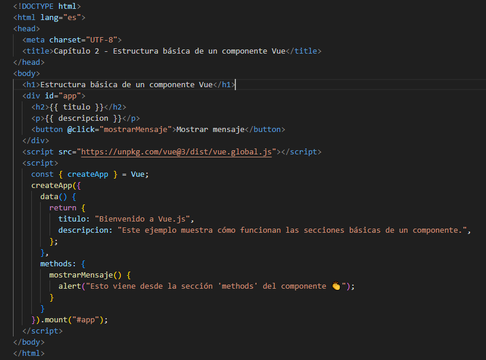

Capitulo II: Componente
¿Que es un componente en Vue?
Para Vue todo es un componente, por lo que se define un componente comom la unidad reutilizable de código que contiene su propio HTLM, logica y estilos. Por ejemplo un botón, una tarjeta de usuario o una sección completa de página
La estructur ageneral de cun componente esta formado por los archivos de componetes que suelen tener extensión .vue por ejemplo Micomponenente.vue) y su estructura basica es la siguiente:

Ejemplo práctico usando Vue con CDN, crea un archivo llamado componente-eje.html con sel siguiente contenido:
Explicación del código:
- data(): Define las variables reactivas (titulo y descripción)
- methods: Define funciones que se pueden usar en la plantilla como (mostrar mensaje)
- template: Es el HTML dentro del div id="app" donde se usan las variables con {{}}
Cada componente controla su propia parte del DOM, se pueden crear más componentes y reutilizarlos, Vue escuha los cambios en data() y actualiza el HTML automáticamente(reactividad)
Siguiente